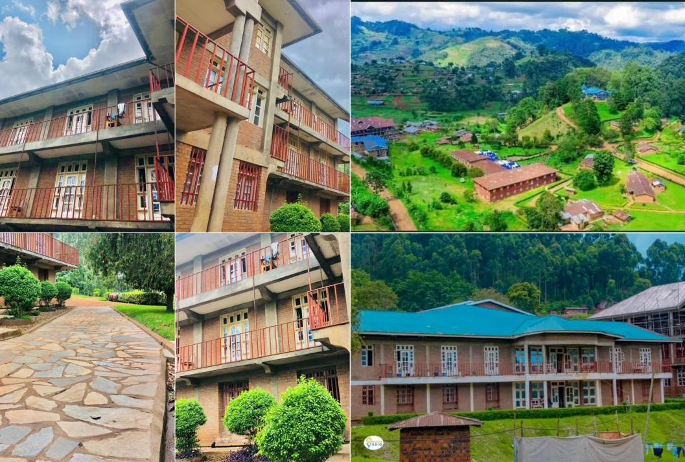

Dévotions, enseignements et activités qui encouragent le caractère.
Au campus, nous vivons une vie spirituelle et une formation holistique : non seulement intellectuelle, mais aussi physique, morale et spirituelle.
À Lukanga, les jeunes reçoivent une éducation complète visant à développer un sens d’intégrité dans leur parcours académique. Les étudiants participent régulièrement aux cultes chaque semaine.Au campus nous retrouvons 3 dortoirs pour accueillir nos étudiants.

L’Université Adventiste de Lukanga offre une vie estudiantine dynamique dans un environnement favorable à l’apprentissage, à la fraternité et au développement des talents. Les étudiants participent régulièrement aux activités académiques, spirituelles, culturelles et sportives organisées sur le campus.
Le sport occupe une place importante dans la vie au campus avec plusieurs disciplines pratiquées par les étudiants, notamment le football ⚽, le basketball 🏀, le volleyball 🏐, le tennis 🎾 ainsi que le footing 🏃♂️. Ces activités renforcent l’esprit d’équipe, la discipline, la santé physique et la convivialité.
Au-delà des études, l’UNILUK encourage aussi les loisirs, les échanges culturels, les moments de détente et la promotion des talents afin d’assurer une formation complète dans un cadre chrétien, moderne et professionnel.
Nous y trouvons également les installations sportives nécessaires aux entraînements et aux compétitions.